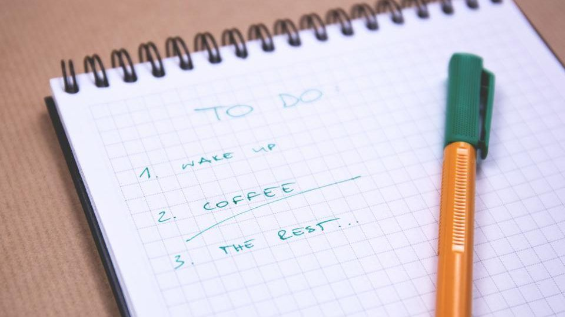

Kit de survie 72h : la liste complète
Le kit que le guide officiel appelle « kit d'urgence » permet à un foyer de tenir seul les trois premiers jours d'une crise (coupure, inondation, tempête), quand les secours peuvent être saturés.
Informations pratiques, sources officielles (guide « Tous responsables » (SGDSN, 2025)). Elles ne remplacent pas les consignes des autorités. En cas d'urgence, appelez le 112 et suivez les consignes de la préfecture, de la radio et de FR-Alert.
Pas besoin de tout faire aujourd'hui. En 15 minutes, vous pouvez déjà :
- Mettre de côté 6 bouteilles d'eau de 1 litre par personne
- Glisser une lampe et des piles dans un sac
- Photocopier vos papiers et les mettre dans une pochette
Chaque petit pas compte : un foyer à moitié prêt s'en sort bien mieux qu'un foyer qui n'a rien préparé.
La liste, besoin par besoin
Les quantités pour votre foyer : l'eau selon le guide officiel (2 litres par personne et par jour), les repas sur la base de 3 par jour.
| Foyer | Eau pour 72 h | Repas sans cuisson |
|---|---|---|
| 1 personne | 6 litres | 9 repas |
| 2 personnes | 12 litres | 18 repas |
| 3 personnes | 18 litres | 27 repas |
| 4 personnes | 24 litres | 36 repas |
Cette liste est la réserve à la maison. Pour partir vite, préparez en plus un sac de secours léger ; pour cocher au fur et à mesure, utilisez la version à imprimer.
Boire et manger
- Eau potable en bouteilles : 6 litres par personne pour 72 heures
- Nourriture non périssable sans cuisson (conserves, petits pots pour bébé, nourriture pour animaux)
- Couteau multifonction et ouvre-boîte
- En dernier recours : pastilles de désinfection de l'eau
Avoir chaud et s'éclairer
- Vêtements chauds et couverture de survie
- Lampe de poche et piles de rechange
- Briquet ou allumettes ; bougies jamais sans surveillance
Se soigner
- Trousse de premiers secours (pansements, compresses, désinfectant)
- Médicaments personnels et ordonnances
- Paire de lunettes de secours
S'informer et rester joignable
- Radio à piles et piles de rechange
- Chargeur de téléphone
- Les numéros d'urgence : 15, 17, 18, 112 et 114 par SMS
Papiers, argent et clés
- Argent liquide
- Photocopies des papiers importants dans une pochette étanche
- Double des clés de la maison et de la voiture
- De quoi occuper les enfants (jeux, livres)
Où ranger son kit et quand le vérifier
En cas d'urgence
Danger immédiat ? Appelez le 112 (ou le 15, 17, 18). Personnes sourdes ou malentendantes : 114 par SMS.
Questions fréquentes
Combien d'eau prévoir dans un kit de survie 72h ?
Le guide « Tous responsables » recommande 6 litres d'eau potable par personne pour 72 heures, soit 2 litres par jour.
Pourquoi 72 heures ?
Lors d'une crise majeure, les secours peuvent être débordés pendant les premiers jours. Le guide recommande d'être autonome pendant ces 72 premières heures.
À quelle fréquence vérifier son kit ?
Deux fois par an : dates de péremption des aliments et des médicaments, état des piles. Et après chaque utilisation.
Faut-il acheter un kit tout fait ?
Non. La liste du guide se compose d'objets courants, souvent déjà présents à la maison. Aucun kit acheté n'est obligatoire.
À lire aussi

Checklist à imprimerImprimez la checklist du kit d’urgence 72h tirée du guide officiel. Version simple à cocher + checklist interactive adaptée à votre famille. Gratuit. Que mettre dans un kit d'urgenceQue mettre dans un kit d’urgence pour tenir 72 heures : eau, nourriture, lumière, radio, soins, papiers. Liste claire tirée du guide officiel + checklist gratuite.
Que mettre dans un kit d'urgenceQue mettre dans un kit d’urgence pour tenir 72 heures : eau, nourriture, lumière, radio, soins, papiers. Liste claire tirée du guide officiel + checklist gratuite. Combien d'eau stockerLe guide officiel demande 6 litres d'eau par personne pour 72 heures, soit 2 litres par jour. Tableau par taille de foyer, stockage et renouvellement.
Combien d'eau stockerLe guide officiel demande 6 litres d'eau par personne pour 72 heures, soit 2 litres par jour. Tableau par taille de foyer, stockage et renouvellement.